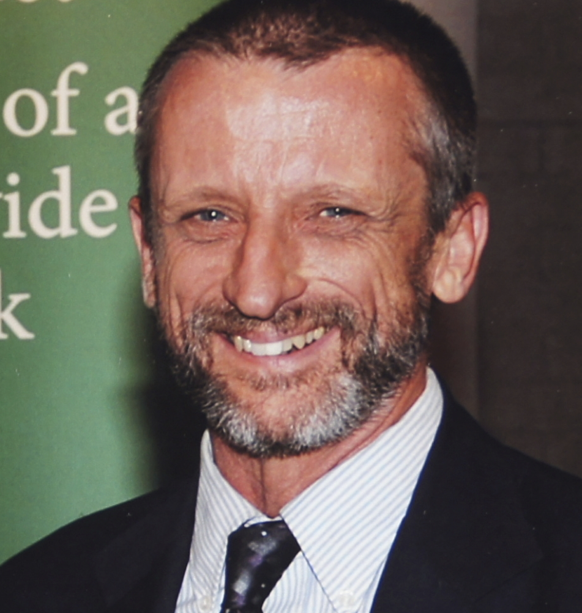
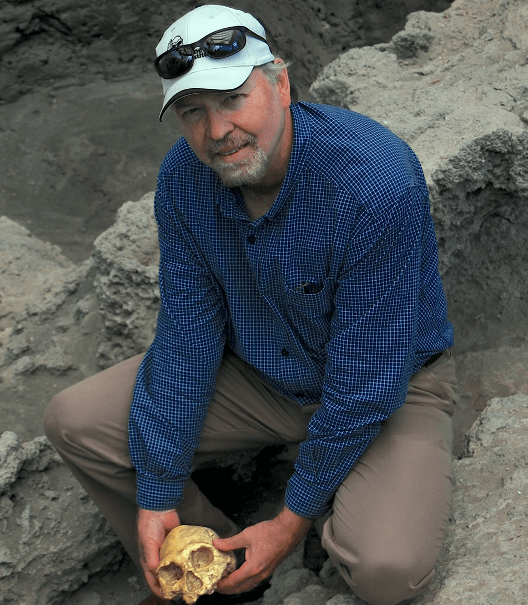
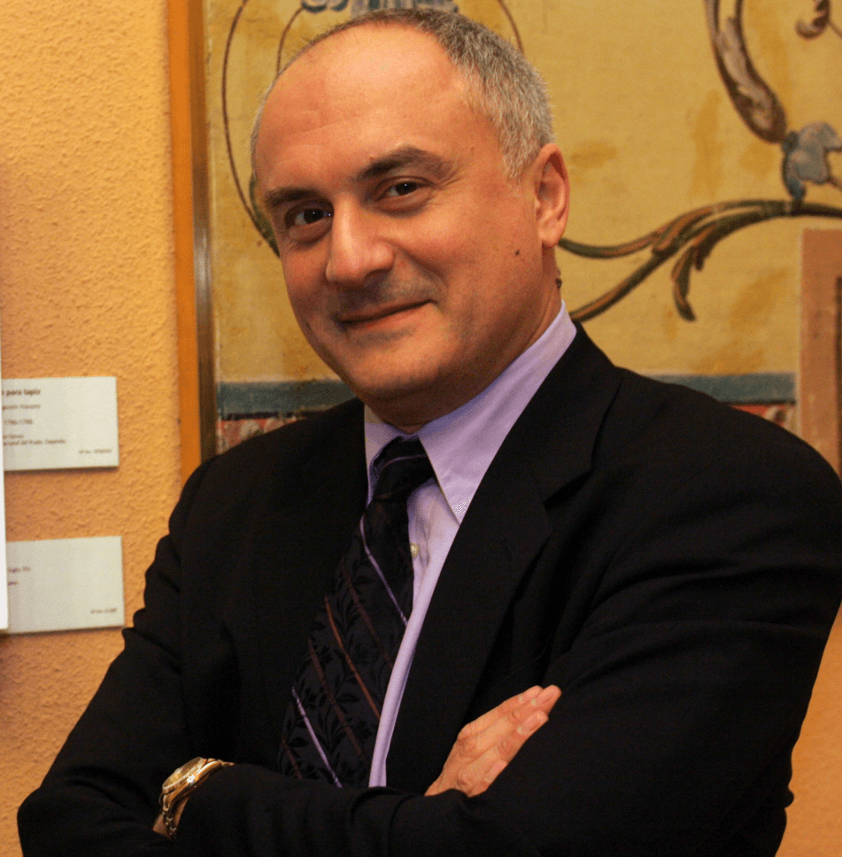

Core Research Team

Provost Professor, Department of History and Philosophy of Science and Medicine
Indiana University Professor, Cognitive Science Program , Neuroscience Program , and Center for the Integrative Study of Animal Behavior , Indiana University
Dr. Allen received his Ph.D. in Philosophy from the University of California, Los Angeles in 1989. He is a philosopher who is interested in the philosophy of biology, psychology, and cognitive science, especially animal cognition and evolution (cognitive ethology), and artificial moral agents.
Indiana University Professor, Cognitive Science Program , Neuroscience Program , and Center for the Integrative Study of Animal Behavior , Indiana University
Dr. Allen received his Ph.D. in Philosophy from the University of California, Los Angeles in 1989. He is a philosopher who is interested in the philosophy of biology, psychology, and cognitive science, especially animal cognition and evolution (cognitive ethology), and artificial moral agents.
Dr. Kathy Schick
kaschick@indiana.edu
kaschick@indiana.edu
Co-Director, The Stone Age Institute and Center for Research into the Anthropological Foundations of Technology
Indiana University Professor, Cognitive Science Program, Indiana University
Dr. Schick received her Ph.D. in Anthropology from the University of California at Berkeley in 1984. She is an archaeologist with interests in Old World prehistory, paleoanthropology, archaeological site formation, zooarchaeology, lithic technology, and primate studies.
Indiana University Professor, Cognitive Science Program, Indiana University
Dr. Schick received her Ph.D. in Anthropology from the University of California at Berkeley in 1984. She is an archaeologist with interests in Old World prehistory, paleoanthropology, archaeological site formation, zooarchaeology, lithic technology, and primate studies.
Associate Professor, Anthropology Department , Cognitive Science Program, and Center for the Integrative Study of Animal Behavior
Indiana University Research Scientist, The Stone Age Institute and Center for Research into the Anthropological Foundations of Technology, Indiana University
Dr. Schoenemann received his Ph.D. in Anthropology from the University of California at Berkeley in 1997. He is a biological anthropologist whose research interests focus on the evolution of primate and hominin brains, functional morphology of the brain, mathematical image analysis, human variation, and the evolution of human cognition and language.
Indiana University Research Scientist, The Stone Age Institute and Center for Research into the Anthropological Foundations of Technology, Indiana University
Dr. Schoenemann received his Ph.D. in Anthropology from the University of California at Berkeley in 1997. He is a biological anthropologist whose research interests focus on the evolution of primate and hominin brains, functional morphology of the brain, mathematical image analysis, human variation, and the evolution of human cognition and language.
Director and Provost Professor, Cognitive Science Program , Indiana University
Provost Professor, Department of Psychological and Brain Sciences and School of Informatics and Computing, Indiana University
Dr. Todd received his Ph.D. in Psychology at Stanford University in 1992. He is a psychologist whose research focuses on the cognitive mechanisms that people use to search for and make decisions about evolutionarily important resources—including information, mates, and food—in space and time.
Provost Professor, Department of Psychological and Brain Sciences and School of Informatics and Computing, Indiana University
Dr. Todd received his Ph.D. in Psychology at Stanford University in 1992. He is a psychologist whose research focuses on the cognitive mechanisms that people use to search for and make decisions about evolutionarily important resources—including information, mates, and food—in space and time.
Dr. Nicholas Toth
toth@indiana.edu
toth@indiana.edu
Co-Director, The Stone Age Institute and Center for Research into the Anthropological Foundations of Technology, Indiana University
Professor, Cognitive Science Program, Indiana University
Dr. Toth received his Ph.D. in Anthropology from the University of California at Berkeley in 1982. He is an archaeologist with research interests in African prehistory, Paleolithic studies, the evolution of human intelligence, lithic technology, experimental archaeology, microscopic approaches to archaeology, zooarchaeology, ethnoarchaeology, and primate studies.
Professor, Cognitive Science Program, Indiana University
Dr. Toth received his Ph.D. in Anthropology from the University of California at Berkeley in 1982. He is an archaeologist with research interests in African prehistory, Paleolithic studies, the evolution of human intelligence, lithic technology, experimental archaeology, microscopic approaches to archaeology, zooarchaeology, ethnoarchaeology, and primate studies.
Research Scientists

Dr. Kevin Hunt
kdhunt@indiana.edu
kdhunt@indiana.edu
Professor, Anthropology Department
Indiana University Research Scientist, The Stone Age Institute and Center for Research into the Anthropological Foundations of Technology, Indiana University
Director, Semliki Chimpanzee Project
Dr. Hunt received his Ph.D. in Anthropology from the University of Michigan in 1989. He is a biological anthropologist whose research focuses on chimpanzee behavior and ecology, functional morphology, the origins of bipedalism, and human evolution.
Indiana University Research Scientist, The Stone Age Institute and Center for Research into the Anthropological Foundations of Technology, Indiana University
Director, Semliki Chimpanzee Project
Dr. Hunt received his Ph.D. in Anthropology from the University of Michigan in 1989. He is a biological anthropologist whose research focuses on chimpanzee behavior and ecology, functional morphology, the origins of bipedalism, and human evolution.
Dr. Shelby S. Putt
ssputt@indiana.edu
ssputt@indiana.edu
Postdoctoral Research Fellow, The Stone Age Institute and Center for Research into the Anthropological Foundations of Technology, Indiana University
Dr. Putt received her Ph.D. in Anthropology from the University of Iowa in 2016. She is a biological anthropologist whose research interests include human evolution, Paleolithic technology, the evolution of human language and cognition, cognitive neuroscience, functional neuroimaging, experimental archaeology, and primate tool use behaviors.
Dr. Putt received her Ph.D. in Anthropology from the University of Iowa in 2016. She is a biological anthropologist whose research interests include human evolution, Paleolithic technology, the evolution of human language and cognition, cognitive neuroscience, functional neuroimaging, experimental archaeology, and primate tool use behaviors.
Dr. Xing Gao
gaoxing@ivpp.ac.cn
gaoxing@ivpp.ac.cn
Director, Department of Paleoanthropology
Chinese Academy of Sciences Professor, Institute of Vertebrate Paleontology and Paleoanthropology, Chinese Academy of Sciences
Dr. Gao received his Ph.D. in Anthropology from the University of Arizona in 1999. He is an archaeologist with research interests in lithic technology, human evolution, sedimentology, human behavioral ecology, and Pleistocene archaeology in China. He is involved in research at Zhoukoudian (Peking Man site) and the Nihewan Basin.
Chinese Academy of Sciences Professor, Institute of Vertebrate Paleontology and Paleoanthropology, Chinese Academy of Sciences
Dr. Gao received his Ph.D. in Anthropology from the University of Arizona in 1999. He is an archaeologist with research interests in lithic technology, human evolution, sedimentology, human behavioral ecology, and Pleistocene archaeology in China. He is involved in research at Zhoukoudian (Peking Man site) and the Nihewan Basin.

Dr. David Lordkipanidze
gaoxing@ivpp.ac.cn
gaoxing@ivpp.ac.cn
Director General, Georgian National Museum
Director, Dmanisi Project
Dr. Lordkipanidze received his Ph.D. in Geography from the Russian Academy of Sciences in 1992. He is an archaeologist whose research focuses on human evolution at the site of Dmanisi in the Republic of Georgia.
Director, Dmanisi Project
Dr. Lordkipanidze received his Ph.D. in Geography from the Russian Academy of Sciences in 1992. He is an archaeologist whose research focuses on human evolution at the site of Dmanisi in the Republic of Georgia.
Assistant Professor, Geological Sciences, Indiana University
Co-Director, Olduvai Gorge Coring Project
Research Scientist, The Stone Age Institute and Center for Research into the Anthropological Foundations of Technology, Indiana University Director General, Georgian National Museum
Dr. Njau received his Ph.D. from Rutgers University in 2006. He is an archaeologist whose research interests include human evolution, hominid paleolandscapes in East Africa, vertebrate taphonomy, zooarchaeology, and crocodilian feeding behaviors in relation to hominins at Olduvai Gorge.
Co-Director, Olduvai Gorge Coring Project
Research Scientist, The Stone Age Institute and Center for Research into the Anthropological Foundations of Technology, Indiana University Director General, Georgian National Museum
Dr. Njau received his Ph.D. from Rutgers University in 2006. He is an archaeologist whose research interests include human evolution, hominid paleolandscapes in East Africa, vertebrate taphonomy, zooarchaeology, and crocodilian feeding behaviors in relation to hominins at Olduvai Gorge.
Graduate Students
Graduate Fellow, Cognitive Science Program and Department of Psychological and Brain Sciences , Indiana University
Lindsey Kitchell received her M.Sc. in Palaeoanthropology and Palaeolithic Archaeology from the Institute of Archaeology at University College London. She is a Ph.D. student with interests in the evolution of the human brain, the relationship between the endocranial and brain surfaces, brain asymmetry, osteology, eye tracking, and geometric morphometrics.
Lindsey Kitchell received her M.Sc. in Palaeoanthropology and Palaeolithic Archaeology from the Institute of Archaeology at University College London. She is a Ph.D. student with interests in the evolution of the human brain, the relationship between the endocranial and brain surfaces, brain asymmetry, osteology, eye tracking, and geometric morphometrics.
Graduate Fellow, Cognitive Science Program and
Department of Psychological and Brain Sciences, Indiana University
Jared Lorince received his B.A. in Cognitive Science at the University of California at Berkeley in 2009. He is a recent Ph.D. student whose research focuses on how people search for information in Web environments and their decision-making strategies.
Jared Lorince received his B.A. in Cognitive Science at the University of California at Berkeley in 2009. He is a recent Ph.D. student whose research focuses on how people search for information in Web environments and their decision-making strategies.
Lana Ruck
lruck@iu.edu
lruck@iu.edu
Graduate Fellow, Cognitive Science Program and Anthropology Department
Lana Ruck received her M.A. in Anthropology at Florida Atlantic University in 2015. She is a Ph.D. student whose research focuses on the evolution of human cognition, brain lateralization, lithic technology, and handedness.
Lana Ruck received her M.A. in Anthropology at Florida Atlantic University in 2015. She is a Ph.D. student whose research focuses on the evolution of human cognition, brain lateralization, lithic technology, and handedness.
Graduate Fellow, Cognitive Science Program and the Center for Complex Networks and Systems Research
Amanda A. Winburn has a B.A. in Biological Anthropology from Emory University and an M.A. in Biological Anthropology from Vanderbilt University. She is a Ph.D. student whose interests are in how humans and groups search through and exploit information to solve complex problems.
Amanda A. Winburn has a B.A. in Biological Anthropology from Emory University and an M.A. in Biological Anthropology from Vanderbilt University. She is a Ph.D. student whose interests are in how humans and groups search through and exploit information to solve complex problems.
More About Us
Latest News

Human Cognitive Evolution course at King Abdullah University...read more

Dr. Colin Allen to discuss the evolution of expertise...read more

Dr. Peter Todd to discuss information exploitation strategies
...read more

What does it mean to have a belief?
read more
read more

How do apes communicate?read more

Cognitive neuroscience of stone tool manufacturing...read more